Data visualization in
R
First steps with
ggplot2
Current Topics in Bioinformatics
7 November 2025
1. Introduction
Data visualization refers to the techniques used to communicate data or information by encoding it as visual objects (e.g., points, lines or bars) contained in graphics. According to Friedman (2008) the main goal of data visualization is to communicate information clearly and effectively through graphical means.
According to Friedman, that does not mean that data visualization needs to look boring to be functional or extremely sophisticated to look beautiful. To convey ideas effectively, both aesthetic form and functionality need to go hand in hand. However, designers often fail to achieve a balance between form and function, creating gorgeous data visualizations which fail to serve their main purpose, communicate information (Friedman 2008).
Key concept
Graphs are
a great tool to explore the data and they are essential for presenting
results. Their main goal is to communicate information clearly and
efficiently to users. It is one of the steps in data analysis or data
science.
Each new visualization can give us insights about our data. Some of this revealing information may already be known (but perhaps not yet demonstrated), while other aspects may be completely new to us. The figure below represents the process of searching new perceptions in the data (Aisch 2019).
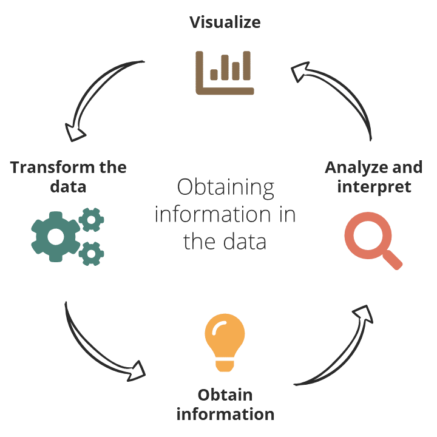
P2 Learning outcomes
Learn the grammar of graphics of
ggplot2Create the most common bioinformatic graphs (scatter plots, line plots, bar plots, …)
Distinguish graphic quality indicators
- Integrity
- Chartjunk
- Data-ink ratio
Learn the characteristics of effective graphic displays
1.1 Practicals organization
In this practical, we are going to use the RStudio integrated development environment (IDE) for R. R is a programming language for statistical computing and graphics.
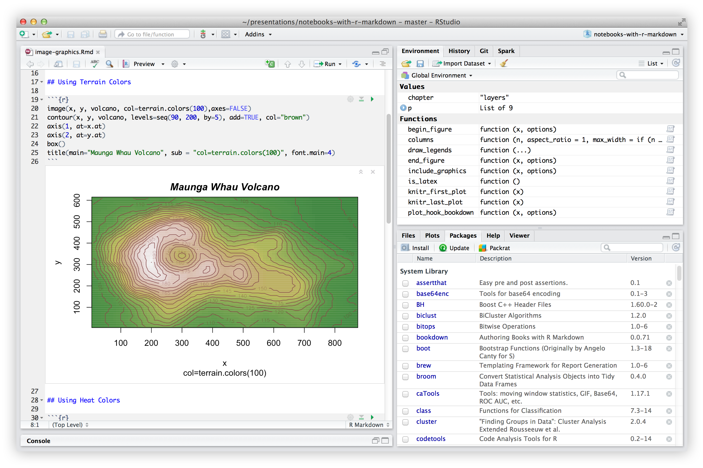
The current document in which we are working is an R Markdown document. Similar to a Jupyter Notebook, R Markdown documents are fully reproducible and allow you to combine text, images and code –this time, R programming language.
To render a R Markdown document to a HTML file, you
just need to click the Knit button that you’ll see in the
RStudio bar. This HTML file can be shared as a report.
You don’t need to render the whole document every time you want to
see the result of your R code. You can click in the
Run current chunk button or use the keyboard shortcut
Ctrl+Alt+C and the result of the
code will appear below it.
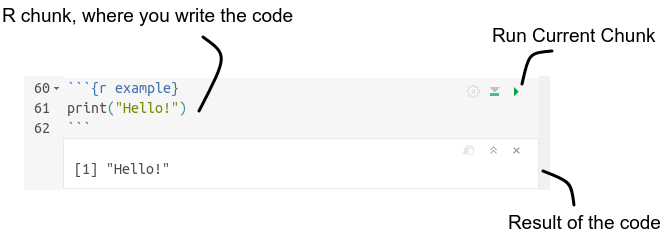
You will see different icons through the document, the meaning of which is:
: additional or useful
information
: a worked example
: a practical exercise
: a space to answer the exercise
: a hint to solve an exercise
: a more challenging exercise
2. Tools installation
We strongly recommend using a Linux operating system and get used to work with the terminal. In this practical though, we won’t use it and there’s almost no difference in using Windows RStudio or Linux RStudio.
2.1 Installing R
R programming language can be downloaded from here, and is available for Windows, Linux and macOS.
2.2 Installing RStudio
RStudio is available to download from here. You can easily install it in Windows, Linux and macOS.
2.3 Installing a package
R packages are collections of functions and/or data developed by the community.
To install a package, we use the install.packages()
function, indicating between quotes the name of the package we want to
install.
2.3.1 Installing ggplot2
ggplot2 is a data visualization package for the
statistical programming language R (Wickham 2009).
It was created by Hadley Wickham, implementing Leland Wilkinson’s
Grammar of Graphics —a general scheme for data visualization which
breaks up graphs into semantic components (Wilkinson
2010).
To install the ggplot2 package, use the following:
install.packages("ggplot2")
2.4 Loading a package
To load a package, we use the function library(),
indicating the name of the library we want to load.
In the case of ggplot2, you’ll use:
library("ggplot2")
You’re ready to start creating graphs!
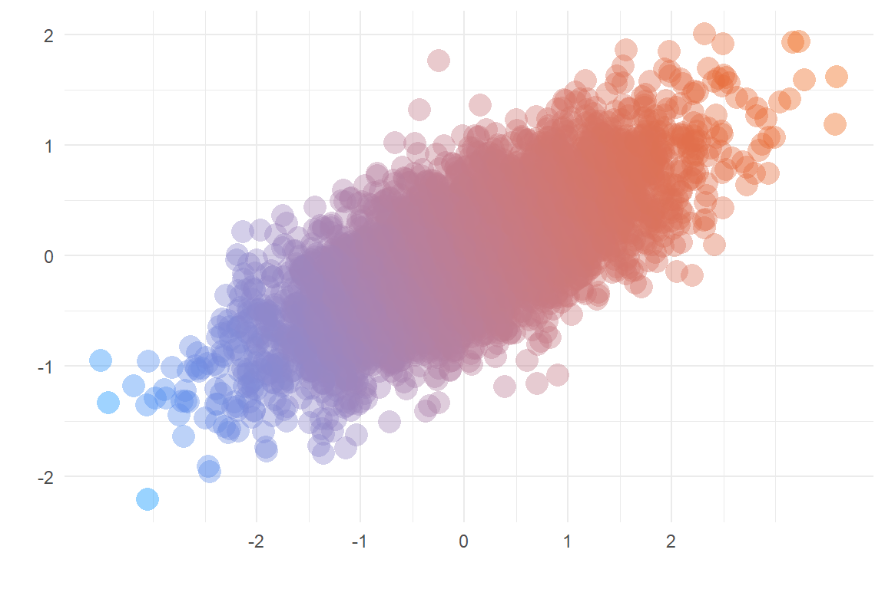
3. Quick introduction to R
3.1 Loading data
To load data from a delimited text file, we normally
use the read.table() function, indicating the name of the
file we want to load (including the directory if the file is not located
in the same working directory as the R session). Furthermore, we can
specify if the file has a header with header = TRUE (by
default FALSE) or the file delimiter with
sep = (by default sep = "").
For example, for loading the content of data.txt file,
which has a header and it’s a tab-delimited file, we will write:
data <- read.table("data.txt", header = TRUE, sep = "\t")
Also, the read.csv() function allows opening files with
a .csv format (comma-separated values data) and the
read.xlsx() function of the xlsx package
allows opening Microsoft Excel files.
3.2 Data formats
In R, the most common data types are:
- Character: consist of numbers, letters or words
delimited with quotes (e.g.
"AGT","2")- Numeric: consists of numbers such as integers
(e.g.
1,-3) or doubles (e.g.0.5,-12.3)
- Numeric: consists of numbers such as integers
(e.g.
- Integer: integer numbers, such as
2L(theLtells R to store this as an integer) - Logical: logical values can take on one of two
values:
TRUE, T orFALSE, F
To know the data type, you can use
the class() function.
type_list <- list(TRUE, 1.2, 10L, "a")
sapply(type_list, class)## [1] "logical" "numeric" "integer" "character"Elements of the previous data types may be combined to form data structures. The main data structures are:
- Vector: consists of an ordered set of values of the same type and/or class (e.g. numeric, character, date, etc.).
# A vector x of mode numeric
x <- c(1, 2, 3)
# A vector y of mode logical
y <- c(TRUE, TRUE, FALSE, FALSE)
# A vector z of mode character
z <- c("Sarah", "Tracy", "Jon")- Matrices: vectors indexed using two indices instead of one.
# A 2 x 2 matrix
matrix22 <- matrix(
c(1, 2, 3, 4),
nrow = 2,
ncol = 2)- Factors: a collection of values that all come from a fixed set of possible values. A factor is similar to a vector, except that the values within a factor are limited to a fixed set of possible values.
# A vector containing "dna" and "rna"
factor_vector <- as.factor(c("rna", "dna", "dna", "rna"))
str(factor_vector)## Factor w/ 2 levels "dna","rna": 2 1 1 2 Remember to always
transform categorical variables to a factor. You can have a
categorical variable as characters, like the previous example
(“dna” and “rna”) but also as numerical values
(you can have groups “1”, “2” and
“3”). In this case you need to tell R to use numerical
values as a factor, transforming them using the as.factor()
function.
- Lists: a collection of data structures. The components of a list can be of any structure.
# A list
x <- list(1, "a", TRUE, 1+4i)- Data.Frame: a collection of vectors that all have the same length. This is like a matrix, except that each column can contain a different data type. The attributes of an object provide specific information about the object itself.
# A dataframe
dat <- data.frame(id = letters[1:10], x = 1:10, y = 11:20)4. Data visualization theory
There is grounded theory about data visualization (Ortiz 2014). This section highlights the pioneering contribution of the work of Edward Tufte (1942–), American statistician and professor emeritus of political science, statistics, and computer science at Yale University. One of the central ideas of Tufte’s work refers to the removal of non-useful elements in the graphics, as they distract attention from the explanatory elements. He coined the word chartjunk to refer to this useless, non-informative, or information-obscuring elements (Minguillon 2016). In contrast, the concept of excellence was defined as the communication of complex ideas with clarity, precision and efficiency (Minguillon 2016).
4.1 Graphic quality indicators
Applicable to any graphic. These are concrete and relatively objective guides to assess the quality of a graph (Tufte, 2001).
- Graphical integrity: refers to how accurately the visual elements represent the data. The lie factor, how much a graphic deviates from the actual data, should be minimized.
- Chartjunk: minimize the use of graphic decoration that interferes with the interpretation of the data: 3D effect, patterns…
- Data-ink ratio: maximize the data ink vs. total ink used to print the graphic.
4.1.1 Lie factor, chartjunk and pies
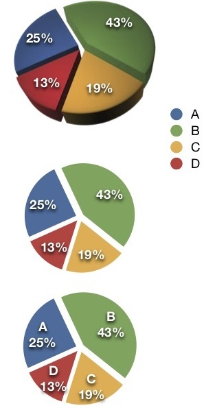
The lie factor is the ratio of the size of an effect shown in the graphic to the size of the effect in the data. Ideally, the lie factor should be 1 (no distortion).
A chartjunk is an unnecessary or confusing visual element in graphs and are not necessary to comprehend the information represented on the graph or distract the the viewer from this information.
A popular design that qualifies as chartjunk and introduce lie factors is the 3D pie. In the figure, we can see how segment C looks bigger than B, although is not the case (lie factor). The reason is the variation in the perspective that does not correspond to variation in the data (chartjunk).
If we correct by removing the 3D effect, the lie factor is reduced, but there are still elements that can improve the understanding of the graph: the relation between the colour, the quantification and the category. We can add tags as shown in the series on the right, but then: why not simply show the data in a table? What does the pie graph add to the interpretation? This could be more difficult if, for example, more categories are added.
4.1.2 Data-ink ratio
Maximizing the proportion of data-ink in our graphs has immediate benefits. The rule is: if there is ink that does not represent variation in the data, or the removal of that ink does not represent loss of meaning, that ink must be removed.
\[ Data-ink\;ratio\;=\;\frac{Data-ink}{Total\;ink\;used\;to\;print\;the\;graphic} \] According to the Tufte principle, the data must be displayed above all, so that everything that does not provide information, must be deleted (including background color, borders, grids, …).
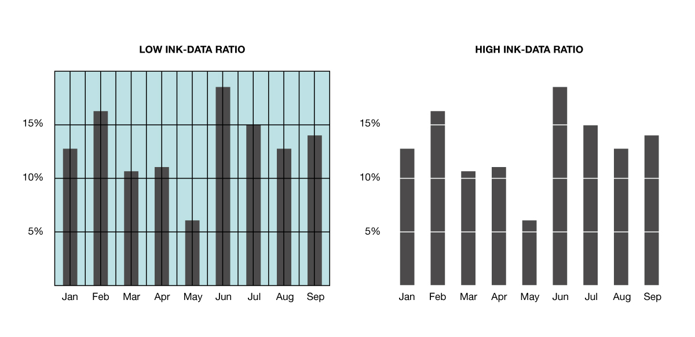
4.2 Characteristics of effective graphic displays
As we have previously introduced, Tufte defined the term excellence in data visualization as communicating complex ideas with clarity, precision and efficiency. A good visualization should:
- Show the data
- Induce the viewer to think about the substance rather than about methodology, graphic design, the technology of graphic production or something else
- Avoid distorting what the data has to say (use fair axis, avoid
using more than one
yaxis) - Present many numbers in a small space
- Make large datasets coherent
- Encourage the eye to compare different pieces of data
- Reveal the data at several levels of detail, from a broad overview to the fine structure
- Serve a reasonably clear purpose: description, exploration, tabulation or decoration
- Be closely integrated with the statistical and verbal descriptions of a dataset
5. The grammar of graphics
In a natural language, there are a series of rules that organize words into sentences, the grammar. Wilkinson (2005), created a grammar of graphics which offers us the basic elements to create them.
The components (or layers) of the grammar of graphics are:
- The data that you want to visualize
- A set of aesthetic mappings (
aes) describing how variables in the data are mapped to aesthetic attributes that you can perceive - The scales map values in the data space to values in an aesthetic space, whether it be colour, or size, or shape. Scales draw a legend or axes, which provide and inverse mapping to make it possible to read the original data values from the graph
- Statistical transformations (
stat), summarise data in many useful ways. For example, binning and counting observations to create a histogram, or summarising a 2d relationship with a linear model - Geometric objects (
geom) represent what you actually see on the plot: points, lines, polygons, etc. - A coordinate system (
coord) describes how data coordinates aremapped to the plane of the graphic. It also provides axes and grid lines to make it possible to read the graph. We normally use a Cartesian coordinate system, but a number of others are available, including polar coordinates and map projections - A faceting describes how to break up the data into subsets and how to display those subsets as small multiples
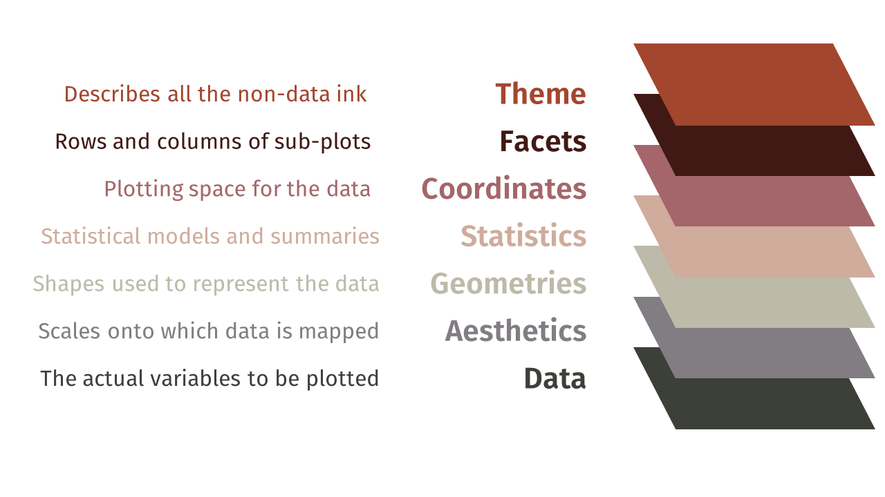
6. First steps with ggplot2
The following examples will walk you through the basic components of
the ggplot2 grammar. The examples use data from the
datasets package, which is already loaded by default in the
R session, as well as some datasets loaded with
ggplot2 package. ggplot2 requires data to be
stored in data frames and in a tidy
format (one observation per row and one variable per
column):
head(iris)## Sepal.Length Sepal.Width Petal.Length Petal.Width Species
## 1 5.1 3.5 1.4 0.2 setosa
## 2 4.9 3.0 1.4 0.2 setosa
## 3 4.7 3.2 1.3 0.2 setosa
## 4 4.6 3.1 1.5 0.2 setosa
## 5 5.0 3.6 1.4 0.2 setosa
## 6 5.4 3.9 1.7 0.4 setosaclass(iris)## [1] "data.frame"Example 1 | Creating a scatter plot
1a | Basic scatter plot
For the first problem we want to represent the
relationship between the variables
Sepal.Width and Sepal.Length from the
iris data frame. This data frame a collection of data that
quantifies the morphologic variation of iris flowers of
three related species (setosa, versicolor and virginica).
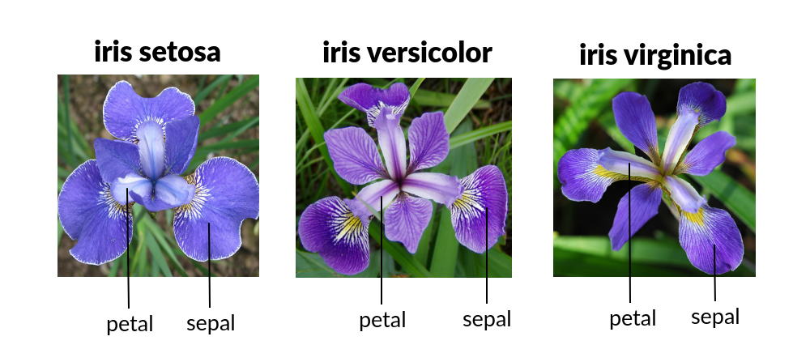
This famous (Fisher’s or
Anderson’s) iris dataset gives the measurements in
centimeters of the variables sepal length and width and petal length and
width, respectively, for 50 flowers from each of 3 species of iris. You
can type ??iris in the R console to read a
description of the data.
To represent any graph in ggplot2 we need two basic
functions that are combined with a + sign:
ggplot(data = iris, mapping = aes(x = Sepal.Width, y = Sepal.Length)) +
geom_point()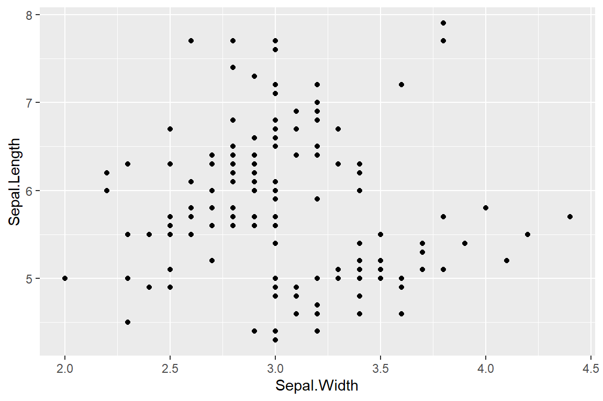
The variables that we want to represent are wrapped within an
aes() function, that specifies the
mapping between the variables and the
aesthetic attributes (in this case we map them
to spatial positions, x and y). We call the
variables directly by their names, because we also pass the entire data
frame to the call with the data argument, so ggplot knows
were to get them from. Finally, we need to add the geometric
object we want to represent. In this case, points.
1b | Represent extra variables
Another variable in the data indicates the species
(Species) it was measured. There are three species: setosa,
versicolor and virginica.
table(iris$Species)##
## setosa versicolor virginica
## 50 50 50Let’s say we want to represent the different types of species in
different colours. In this case we want to use Species as a
categorical variable, i.e., as a factor. By default,
this variable is already a factor:
class(iris$Species)## [1] "factor"We use Species in the colour aesthetic:
ggplot(data = iris, mapping = aes(x = Sepal.Width, y = Sepal.Length, colour = Species)) +
geom_point()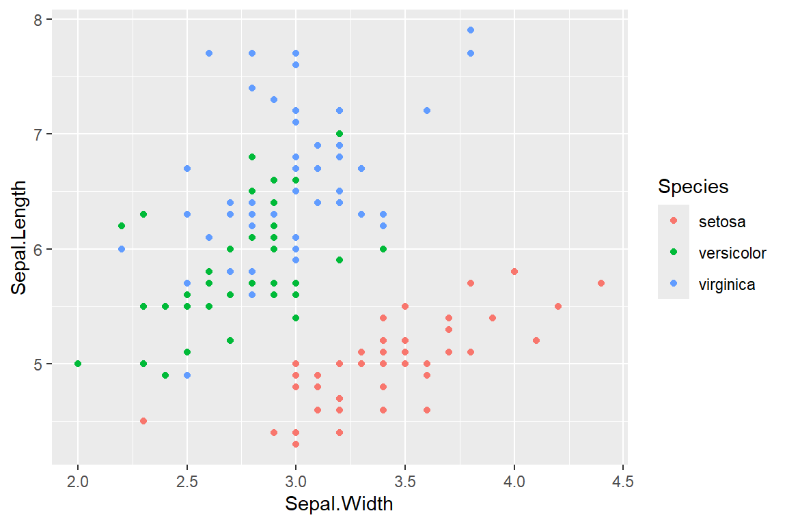
Note that ggplot adds
a legend by default for all the variables that have
been mapped to some aesthetic attribute. This way we can read all the
variables without extra effort.
Exercise
Try mapping Species to another aesthetic attribute
instead of colour, such as shape,
size, alpha. Are you getting any warning
message? Why?
Answer:
Example 2 | Creating a bar plot
For this second exercise we are going to use mtcars
dataset, which contain information about the fuel consumption
and 10 aspects of automobile design and performance for 32
automobiles.
head(mtcars)## mpg cyl disp hp drat wt qsec vs am gear carb
## Mazda RX4 21.0 6 160 110 3.90 2.620 16.46 0 1 4 4
## Mazda RX4 Wag 21.0 6 160 110 3.90 2.875 17.02 0 1 4 4
## Datsun 710 22.8 4 108 93 3.85 2.320 18.61 1 1 4 1
## Hornet 4 Drive 21.4 6 258 110 3.08 3.215 19.44 1 0 3 1
## Hornet Sportabout 18.7 8 360 175 3.15 3.440 17.02 0 0 3 2
## Valiant 18.1 6 225 105 2.76 3.460 20.22 1 0 3 1class(mtcars)## [1] "data.frame" The data was extracted from the
1974 Motor Trend US magazine, and comprises fuel consumption and 10
aspects of automobile design and performance for 32 automobiles (1973–74
models). You can type ??mtcars in the R
console to read a description of the data.
One of the variables of interests in the data indicates the number of
cylinders of the car engines (cyl). There are cars with 4,
6 or 8 cylinders.
2a | Basic bar plot
We want to summarize this data in a simple bar plot
representing the number of cars in each cylinder category; i.e., how
many cars have 4, 6 or 8 cylinders. However, the number of cars with 4
cylinders is not a piece of information present in the dataset, for
example. To know the number it is necessary to count the rows where
cyl = 4, and we are not going to do it
.
ggplot2 is capable to do simple summary operations with
the input variables, referred as statistical
transformations. One of them is to count the occurrences of
each value in a variable, which is precisely what we want to do. And
geom_bar function happen to use the count
statistical transformation by default on the variable mapped to the
x axis.
The first thing that we are going to do is to check the class of the
cyl variable:
# First we check the class of cyl
class(mtcars$cyl)## [1] "numeric"We see that it’s a numeric variable. In this case we want to use
cyl as a categorical variable, distinguishing groups rather
than indicating a value in a numerical continuous scale. For that, we
need to change its class before giving it to ggplot using
the as.factor() function.
# We create a new variable in the dataframe, cyl_f, that is cyl converted to factor
mtcars$cyl_f <- as.factor(mtcars$cyl)Now we can create the bar plot:
ggplot(data = mtcars, mapping = aes(x = cyl_f)) +
geom_bar()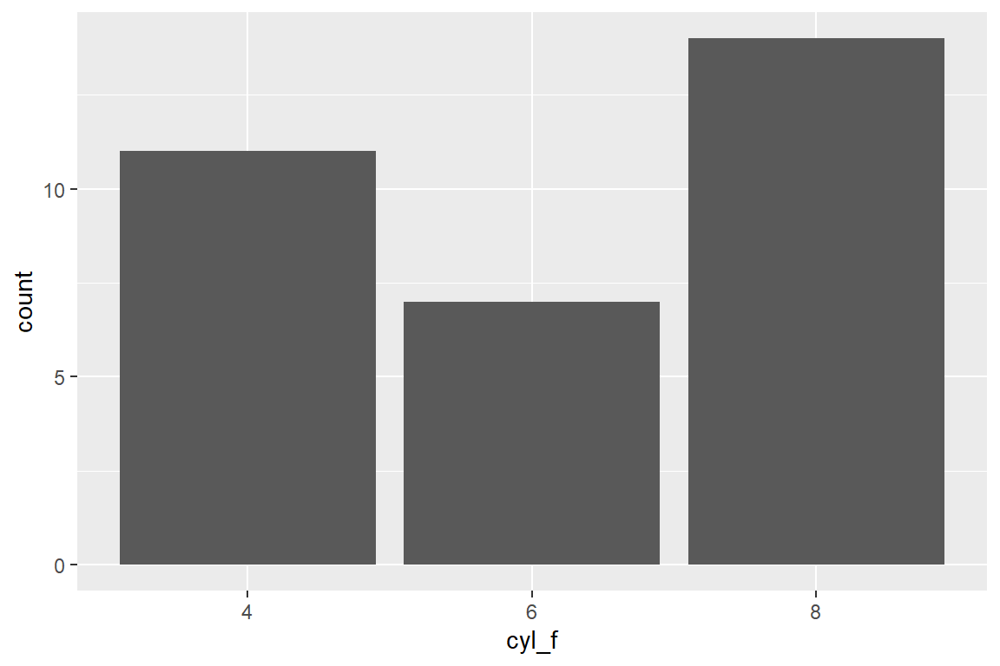
Imagine that we have already a table with the number of cars with
each cylinder category. If we had a precomputed data frame with
cyl and number_of_cars instead, we could pass
number_of_cars variable to geom_col function
instead of geom_bar, that by default takes the variables
mapped to x and y without transformation.
# Let's create the data frame
counts_by_cyl_data_frame <- as.data.frame(table(mtcars$cyl))
names(counts_by_cyl_data_frame) <- c("cyl", "number_of_cars")
# See the data frame
counts_by_cyl_data_frame## cyl number_of_cars
## 1 4 11
## 2 6 7
## 3 8 14# New graph with geom_col
ggplot(data = counts_by_cyl_data_frame, mapping = aes(x = cyl, y = number_of_cars)) +
geom_col() We’ll use geom_bar
if the dataset is not processed and we need to count the occurrences of
a category. If we have a processed dataset with the counts, we’ll use
geom_col.
2b | Groups and position
We have seen in the scatter plot example how to represent groups
encoded in extra variables as colours. Say we now want to show
transmission type (am) in the bar plot, in addition to the
number of cylinders. We can map am to the filling colour of
the bars, fill (colour aesthetic would change
the edges of the rectangles). There are two types of transmission:
0 for automatic cars and 1 for manual
cars.
# First we check the class of the variable
class(mtcars$am)## [1] "numeric"# We make am factor, and we can change the 0/1 notation for a more informative notation: automatic/manual
mtcars$am_f <- factor(mtcars$am, levels = c(0, 1), labels = c("automatic", "manual"))
# Plot
ggplot(data = mtcars, mapping = aes(x = cyl_f, fill = am_f)) +
geom_bar()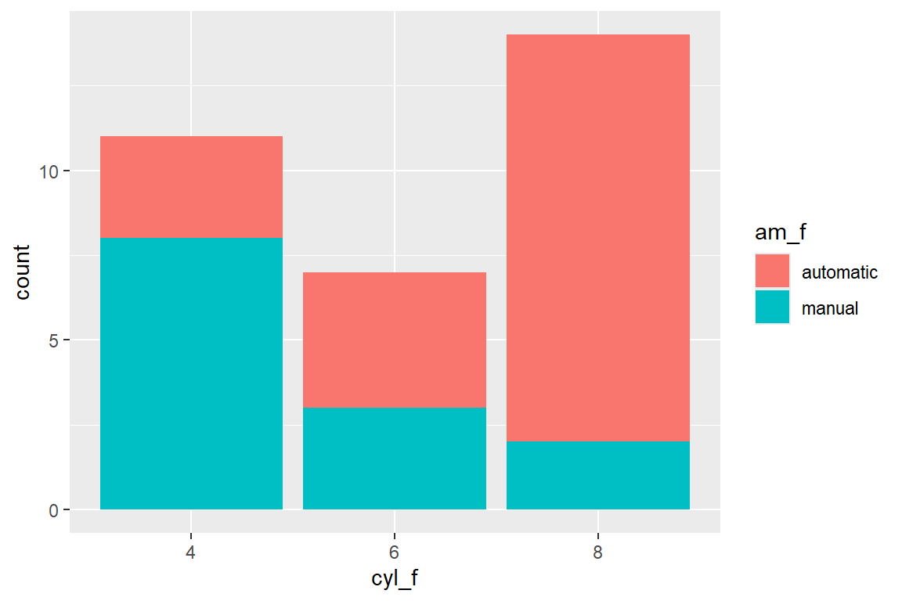
Each geometric object in ggplot2 also has a
position argument that controls how groups are
arranged. In geom_bar the default position is to stack the
groups. We can change it for a side-by-side position with
position = "dodge".
ggplot(data = mtcars, mapping = aes(x = cyl_f, fill = am_f)) +
geom_bar(position = "dodge")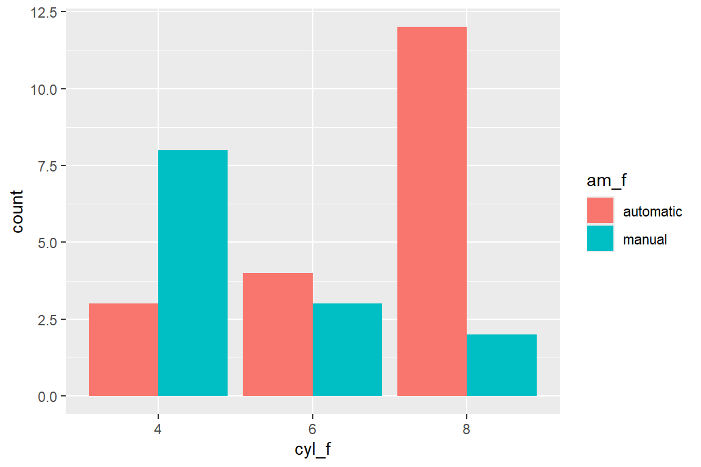
Exercise
Update the plot above with the "fill" position
adjustment instead of "dodge". What it is doing?
Answer:
Update the previous plot to group by the variable gear
instead of the transmission type (am_f). gear
variable is the number of forward gear: cars can have 3, 4 and 5 gears.
Check if you need to transform gear to a factor.
Answer:
Example 3 | Showing the distribution of a variable: histograms
3a | Simple histogram
Now we have a new dataset called diamonds and we need to
understand the distribution of some of its continuous variables. A good
place to start is a histogram, that represents the number of
observations in different ranges as bars.
head(diamonds)## # A tibble: 6 × 10
## carat cut color clarity depth table price x y z
## <dbl> <ord> <ord> <ord> <dbl> <dbl> <int> <dbl> <dbl> <dbl>
## 1 0.23 Ideal E SI2 61.5 55 326 3.95 3.98 2.43
## 2 0.21 Premium E SI1 59.8 61 326 3.89 3.84 2.31
## 3 0.23 Good E VS1 56.9 65 327 4.05 4.07 2.31
## 4 0.29 Premium I VS2 62.4 58 334 4.2 4.23 2.63
## 5 0.31 Good J SI2 63.3 58 335 4.34 4.35 2.75
## 6 0.24 Very Good J VVS2 62.8 57 336 3.94 3.96 2.48class(diamonds)## [1] "tbl_df" "tbl" "data.frame" diamonds is a dataset
containing the prices and other attributes of almost 54,000 diamonds.
You can type ??diamonds in the R console to
read a description of the data.
The function that we need is called geom_histogram() and
has the statistical transformation bin by default. In this
case, bin divides the variable mapped to x in
ranges and counts the number of values in each bin. The number of bins
is controlled with the argument binwidth. In this example
we show the distribution of the weights of diamonds
(carat).
ggplot(data = diamonds, mapping = aes(x = carat)) +
geom_histogram(binwidth = 0.3)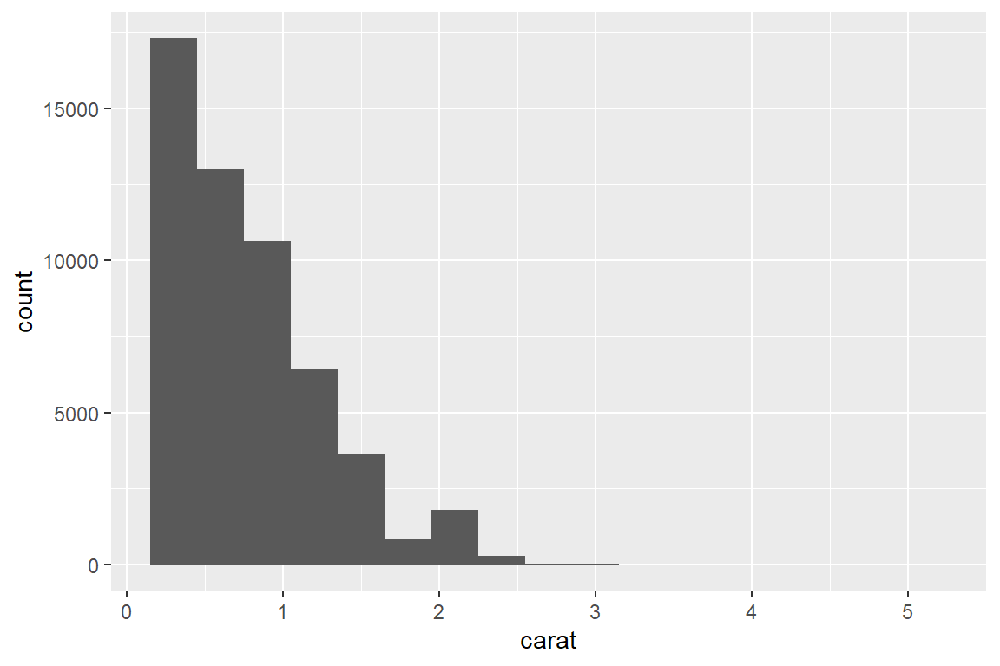
Note that histograms deal with continuous variables while bar plots with discrete, but are sometimes confused.
3b | Multiple histograms
The diamonds dataset contains more information about
diamonds, such as the quality (cut) or the color
(color). To see the distribution of the weight we can try
to map it to the filling cut:
ggplot(data = diamonds, mapping = aes(x = carat, fill = cut)) +
geom_histogram(binwidth = 0.3) 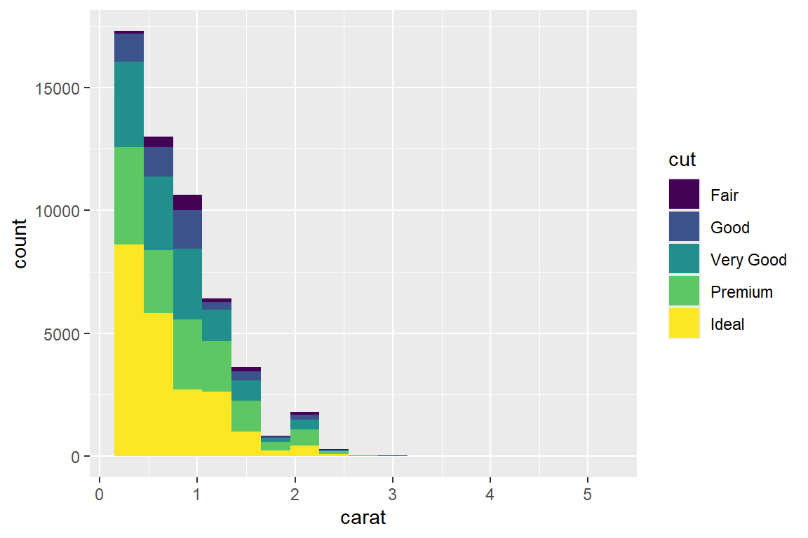
Stacked histograms are difficult to interpret. We can use another
position instead of the default “stacked” position. For
example, using position = "dodge".
ggplot(data = diamonds, mapping = aes(x = carat, fill = cut)) +
geom_histogram(position = "dodge", binwidth = 0.3)
But there’s even a better option. ggplot2 provides a
simple way of creating small multiples or facets with
the function facet_grid:
ggplot(data = diamonds, mapping = aes(x = carat, fill = cut)) +
geom_histogram(position = "dodge", binwidth = 0.3) +
facet_grid(cut ~ .)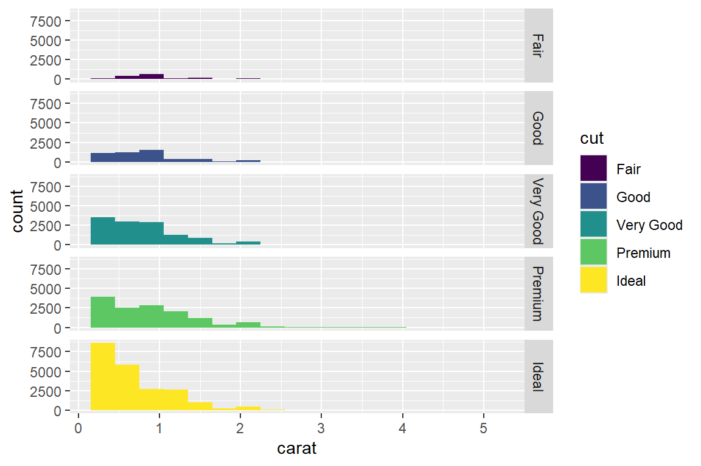
Exercise
What happens if you change the order of the facet_grid
elements, i.e., (. ~ cut)?
Answer:
Which is the best subplot configuration to compare the distributions and why?
Answer:
Example 4 | Showing the distribution of a variable: boxplot
4a | Simple boxplot
Another way of showing the distribution of numerical data is by means of a boxplot. It allows to better understand the skewness through displaying the data quartiles and averages. It also shows outliers as separated dots.
The function that we are going to use is geom_boxplot().
In this example we show the distribution of the weights of diamonds
(carat).
ggplot(data = diamonds, mapping = aes(y = carat)) +
geom_boxplot()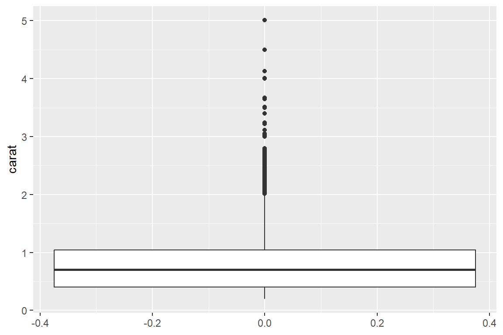
One characteristic of boxplots is that you can show the distribution
of one variable (carat) with respect to another categorical
variable. For example, we can show the distribution of
carat based on the color of the diamond
(color).
ggplot(data = diamonds, mapping = aes(y = carat, x = color)) +
geom_boxplot()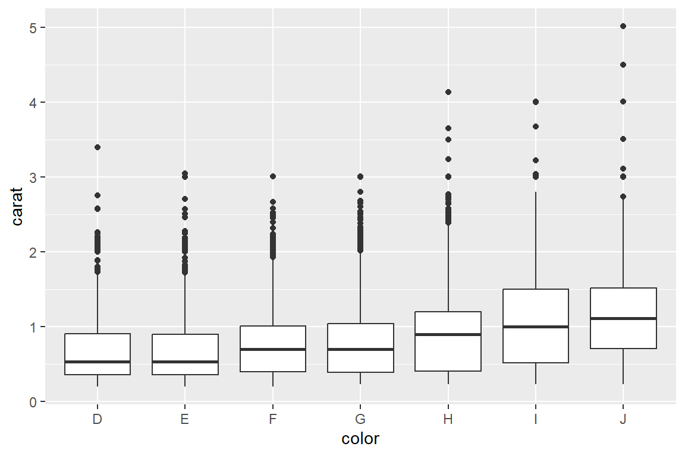
Exercise
Try to fill with a color the boxplot. How would you do it?
Answer:
Example 5 | Customizing a plot
5a | Modify colours
So far we have used the default colour palettes for
all our representations. We may need to change them to make them
accessible to colourblind people, match the colour
palette of our project or give meaningful values (e.g.,
red for positive and blue for negative). We can control the exact
mapping of a variable to an aesthetic attribute with the functions
scale_*.
In the following example we manually set the color of the five type of diamond qualities. You can use other color names checking the following R color guide.
ggplot(data = diamonds, mapping = aes(x = carat, fill = cut)) +
geom_histogram(position = "dodge", binwidth = 0.3) +
facet_grid(cut ~ .) +
scale_fill_manual(values = c("sienna1", "orange", "lightseagreen", "orangered", "red4"))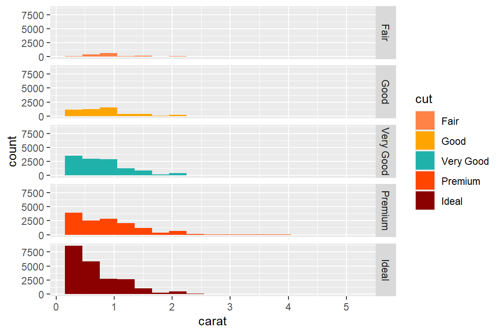
Note that scale functions update both the aesthetic mappings in the plot and in the legend.
5b | Change (or add) axis, legend and plot titles
We may also need to add a title to the plot or
change the axis titles. There are several options for
that: * In ggplot2, axis and legend titles can be specified
with name argument within a scale_* function *
The title can be changed with + ggtitle("Title name") * You
can also use the convenience function labs(), with
fill = "" you will set a new legend title and
title = "" a new title. See the working example:
# We save the common part of the plot in a variable and then we can add more components with the "+" sign
p <- ggplot(data = diamonds, mapping = aes(x = carat, fill = cut)) +
geom_histogram(position = "dodge", binwidth = 0.3) +
facet_grid(cut ~ .)
# Option A:
p + scale_fill_manual(values = c("sienna1", "orange", "lightseagreen", "orangered", "red4"), name = "Quality") +
scale_x_continuous(name = "Weight of the diamond") +
ggtitle("Diamond weight variation")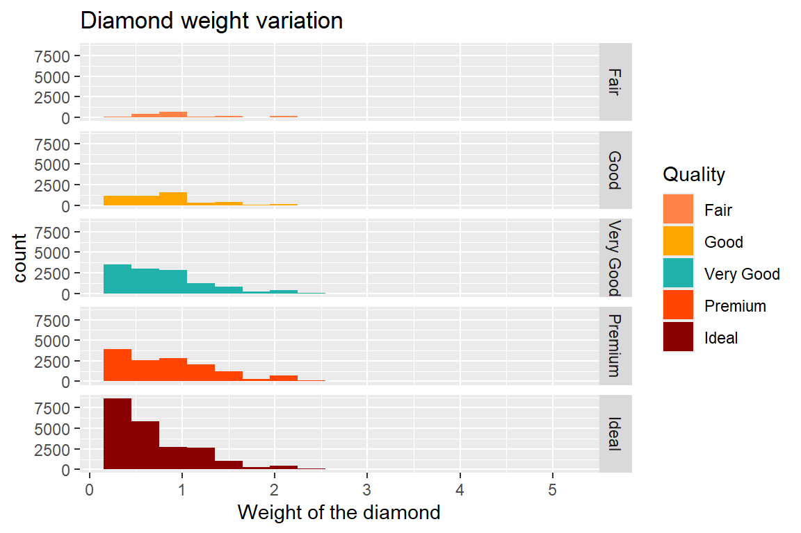
# Option B:
# p + scale_fill_manual(values = c("sienna1", "orange", "lightseagreen", "orangered", "red4")) +
# labs(title = "Diamond weight variation", x = "Weight of the diamond", fill = "Quality")5c | Change theme
The appearance of ggplot2 plots is controlled by the
themes. The default ggplot2 theme has a
gray background and “is designed to put the data forward yet make
comparisons easy”. You can change the general appearance by
choosing a different theme with theme_* functions. There
are eight
different themes available. The following example uses the “black
and white” theme (theme_bw()):
ggplot(data = diamonds, mapping = aes(x = carat, fill = cut)) +
geom_histogram(position = "dodge", binwidth = 0.3) +
facet_grid(cut ~ .) +
scale_fill_manual(values = c("sienna1", "orange", "lightseagreen", "orangered", "red4"), name = "Quality") +
scale_x_continuous(name = "Weight of the diamond") +
ggtitle("Diamond weight variation") +
theme_bw()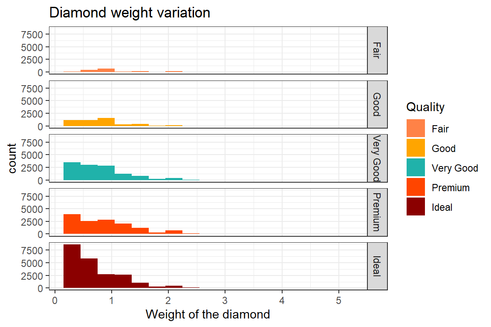
Exercise
Using the following code, try other scale_fill_*
functions in ggplot2 with pre-defined palettes, such as
scale_fill_hue(), scale_fill_brewer(),
scale_fill_viridis_d() (default) and
scale_fill_grey(). Which palette would you use to ensure
that colourblind people can distinguish the colours,
scale_fill_hue() or
scale_fill_viridis_d()?
Answer:
Try subtitle = "", caption ="" and
tag ="" arguments from the labs() function.
What are they for?
Answer:
Which theme of the eight available do you think that maximizes the data-ink ratio?
Answer:
Saving the plots
There are several ways to save a plot to a file. Here you have a couple of examples:
A. Export button from RStudio plot panel:
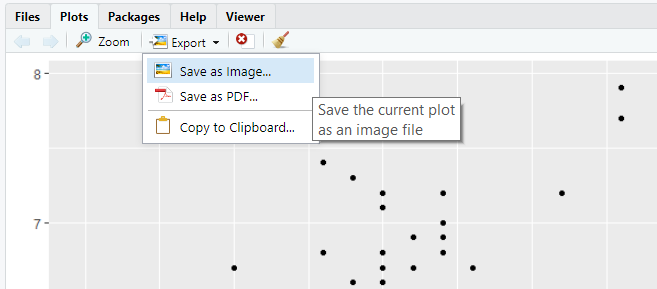
B. ggsave function from ggplot2 package
p <- ggplot(data = iris, mapping = aes(x = Sepal.Width, y = Sepal.Length)) + geom_point()
ggsave(filename = "plot.png", plot = p, width = 6, height = 4) # In inches by defaultPlots can be saved using different image file formats. Option
A gives you the format options in a drop list (image
format: PNG, JPG, …), option B guesses the format from
the extension (e.g. plot.png or plot.pdf).
The main formats can be classified into:
Raster/bitmat formats, where information is stored in pixels and have a maximum resolution.
- PNG: extension .png, supports transparent background, good compression, doesn’t lose quality
- JPEG: extensions .jpg and .jpeg, very good compression, used in personal photography but suffers from quality degradation with repeated modifications
- TIFF: extensions .tif and .tiff, preferred format for professional printing
Vector formats, where information is encoded in geometric shapes that can be rendered at any size without losing resolution.
- SVG: extension .svg, standard for vector graphics,
requires
svglitepackage
- SVG: extension .svg, standard for vector graphics,
requires
Hybrid
- PDF: can contain both vector graphics and raster images
Exercise
Save the plot p in a raster and a vector format with the
same size using ggsave() (e.g.:
width = 6, height = 4). What differences do you observe
when you zoom in them?
Note: svg devices require
svglite R package and other system libraries
(libcairo2-dev and libfontconfig1-dev). Skip
the exercise if you get an error!
Answer:
Wrap up exercise
If for representing a scatter plot we use geom_point(),
a bar plot geom_bar() … could you guess how to represent a
line plot with ggplot2 syntax?
- Represent how
unemployvariable changes over time (datevariable) fromeconomicsdataset with a line plot usingggplot2syntax - Modify axis names and add a title
- Use a theme
- Save the plot to a file using a raster image format (png)
Answer:
The final image should look like this:
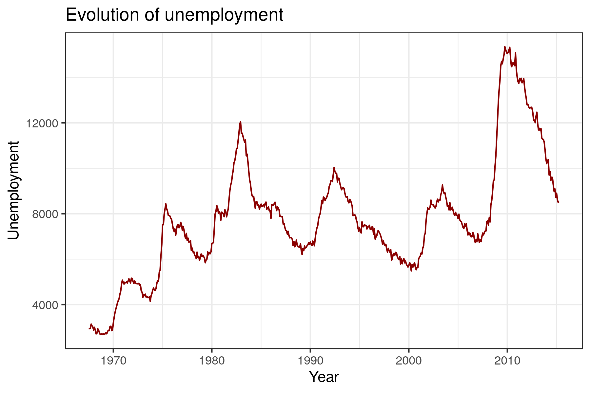
Try to reproduce a plot!
Pick one of the following plots. With your knowledge on
ggplot2 try to write the code that reproduce the same
figure. You are given the name of the dataset and the color palette (or
other hints).
| Group | Dataset | Description | Hint |
|---|---|---|---|
| 1 | Titanic |
Survival of passengers on the Titanic | Color palette is: “#79AEB2”, “#4A6274” |
| 2 | ToothGrowth |
The Effect of Vitamin C on Tooth Growth in Guinea Pigs | Color palette is: “#58A6A6”, “#EFA355” |
| 3 | msleep |
An updated and expanded version of the mammals sleep dataset. | You can color in gray the NA values inside the scale_fill (na.value = “grey80”) |
| 4 | mpg |
Fuel economy data from 1999 and 2008 for 38 popular models of car | Color palette is: “#4CC3CD”, “#FEE883” |
| 5 | midwest |
Midwest demographics. | Two aesthetics are combined inside geom_point(), color and size. |
| 6 | diamonds |
Prices of 50,000 round cut diamonds | The viridis palette is used. |
| 7 | HairEyeColor |
Hair and Eye Color of Statistics Students | Color palette is: “#58A6A6”, “#EFA355” |
| 8 | infert |
Infertility after Spontaneous and Induced Abortion | Color palette is: “#900C3F”, “#C70039”, “#FF5733” |
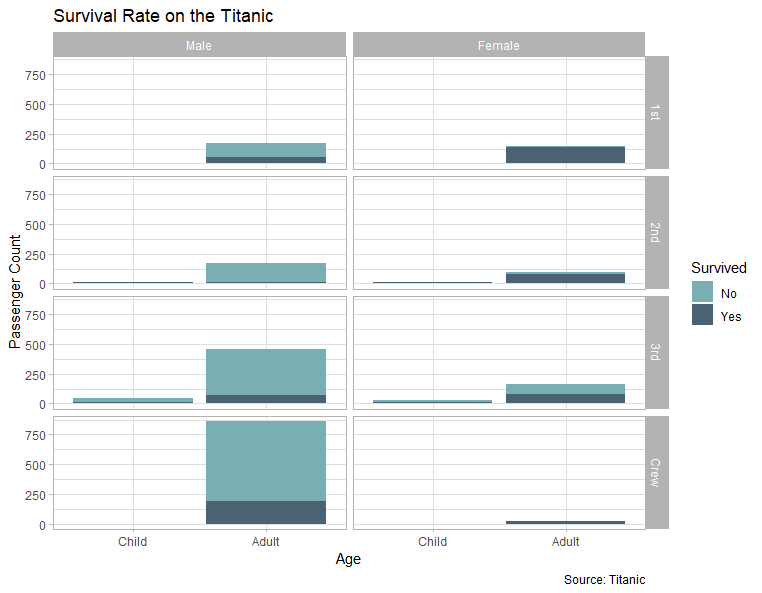 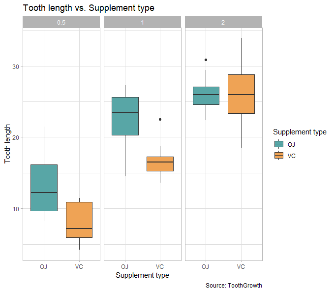 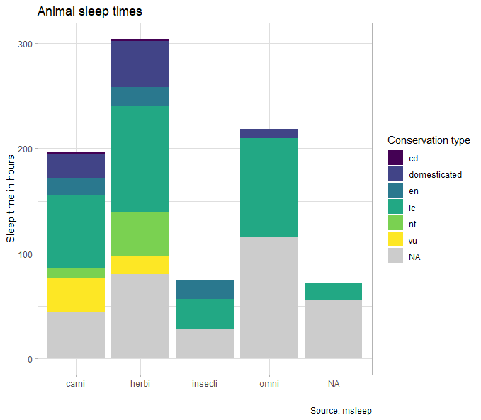 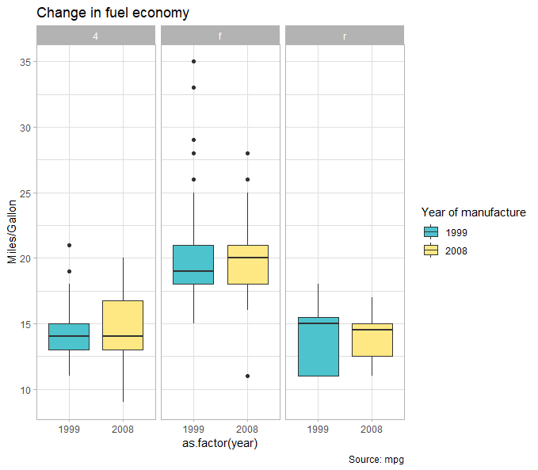 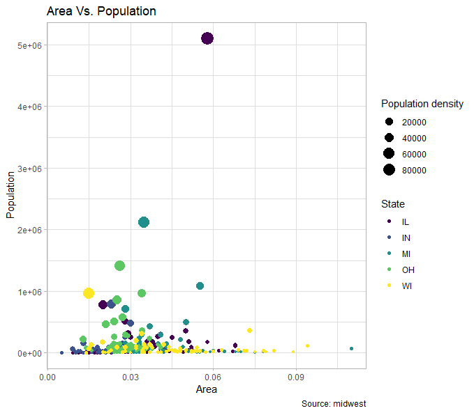 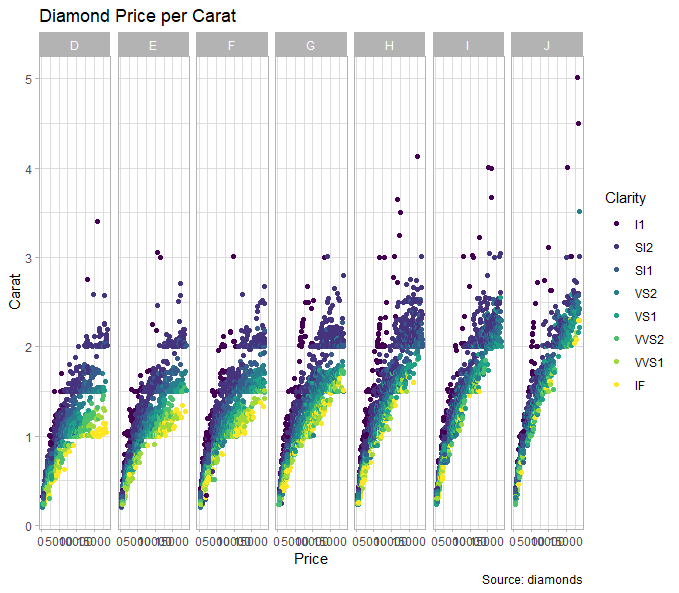 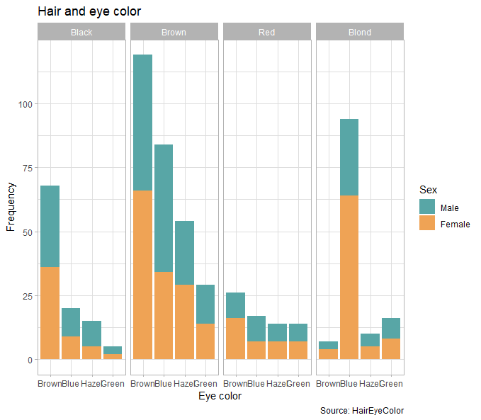 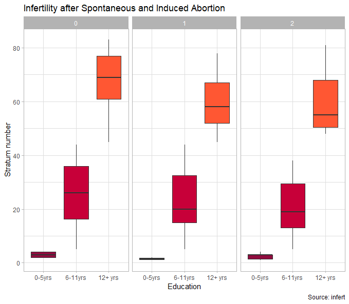
Analyze a real scientific dataset
We want practice with real-world data sets that are the appropriate
to build our ggplot2 skills. You have available to choose
from 7 datasets. Make a meaningful representation of the data they
contain. You have available the corresponding research article and a
short description that can help.
Datasets from: Whitlock, Michael C, and Dolph Schluter. 2020. The Analysis of Biological Data. Third Edition.
1. Zika and head size
Zika virus can be spread by mosquitos, sexual contact or from mom to fetus. In 2015 there was an outbreak in Brazil that spread to other countries in the Americas. Small head size (microcephaly) associated with abnormal brain development was frequently reported in newborn babies of infected mothers. Here are data for head measurements of fetuses in pregnant women infected with Zika, taken from ultrasounds between 33 and 36 weeks. A head size between 80 and 94 mm is considered normal for uninfected mothers at this age.
Data link: https://raw.githubusercontent.com/marta-coronado/TAB-data-figs/refs/heads/main/P2_datasets/chap02e2bZikaBiparietalDiameter.csv - Read the study
2. Life at high altitude
Living at high altitude represents some physiological challenges of living with a limited oxygen supply. Human populations in the Andes, Ethiopia, and Tibet have faced these challenges, and adapted. One potential mechanism of this adaptation is to raise the hemoglobin content of blood to get more oxygen. Beall et al. measured the hemoglobin content of people from these three populations as well as a control of males living at sea level in America.
Data link: https://raw.githubusercontent.com/marta-coronado/TAB-data-figs/refs/heads/main/P2_datasets/chap02e3bHumanHemoglobinElevation.csv - Read the study
3. Don’t go to the light!
The study found that moth populations from urban areas with decades of light pollution exhibit a significantly weaker attraction to light compared to moths from pristine, dark-sky areas, suggesting an evolutionary adaptation to artificial light at night
Data link: https://raw.githubusercontent.com/marta-coronado/TAB-data-figs/refs/heads/main/P2_datasets/chap02q15MothsToLight.csv - Read the study
4. Hearing color
Some people experience one of their senses through another. For example, you might hear the name “Bob” and see grey. Saenz and Koch were interested to see how this type of perception impacted the ability to complete complex multi-sensory tasks. So they compared people with and without this unique type of sensory perception (known as synesthetes) to a group of people without such abilities, on a test involving rhythmic temporal patterns similar to Morse code. Data link: https://raw.githubusercontent.com/marta-coronado/TAB-data-figs/refs/heads/main/P2_datasets/chap02q10Synesthetes.csv - Read the study
5. Eat less, live longer?
For some reason, restricting food intake often increases lifespan. To see if this was the case, Mattison et al fed 17 rhesus monkeys (7 females, 10 males) a reduced diet with 30% of the normal nutrition, and 17 other rhesus monkeys (8 females, 9 males) a normal nutritious diet. Data link: https://raw.githubusercontent.com/marta-coronado/TAB-data-figs/refs/heads/main/P2_datasets/chap02q35FoodReductionLifespan.csv - Read the study
6. A gene for monogamy?
The gene for the vasopressin receptor V1a is expressed at higher levels in the forebrain of monogamous than promiscuous vole species. To see if expression of this gene influenced monogamy, Lim et al experimentally enhanced V1a expression in the forebrain of 11 males of the meadow vole - a solitary promiscuous species, and compared the percentage of time these and control males spent huddling with a female placed with him (ass a measure of monogamy). Data link: https://raw.githubusercontent.com/marta-coronado/TAB-data-figs/refs/heads/main/P2_datasets/chap03q15VasopressinVoles.csv - Read the study
7. Running with a lighter load
Male spiders in the genus Tidarren are tiny and weigh about 1 percent as much as females. Just before sexual maturity, males voluntarily amputate one of their two organs just before sexual maturity. Could this maybe allow them to move faster?
Data link: https://raw.githubusercontent.com/marta-coronado/TAB-data-figs/refs/heads/main/P2_datasets/chap03e2SpiderAmputation.csv - Read the study
Hint: you can read the data directly using the link as:
data <- read.csv("https://raw.githubusercontent.com/marta-coronado/TAB-data-figs/refs/heads/main/P2_datasets/chap03e2SpiderAmputation.csv")Upload your results to your GitHub
Upload this Rmd document and the figures you have generated to your GitHub repository.